의령 리마인드웨딩 — 못 찍었던 웨딩사진을 다시 찍는 부부
2026-10-23 발행
리마인드웨딩은 결혼할 때 찍지 못한 웨딩사진을 다시 찍는 촬영입니다. 의령과 창원에서 부부가 드레스와 턱시도를 다시 입고 스튜디오에 서는 날, 사진사는 신랑 신부였던 두 사람을 다시 마주 세웁니다.
이 촬영을 찾으시는 분들은 대개 이렇게 말합니다. "그때 돈이 없어서 사진을 못 남겼어요." "웨딩홀에서 찍은 단체사진 말고는 없어요." 그 말을 들으면 저는 준비를 오래 합니다. 한 번 놓친 사진을 다시 만드는 일이기 때문입니다.
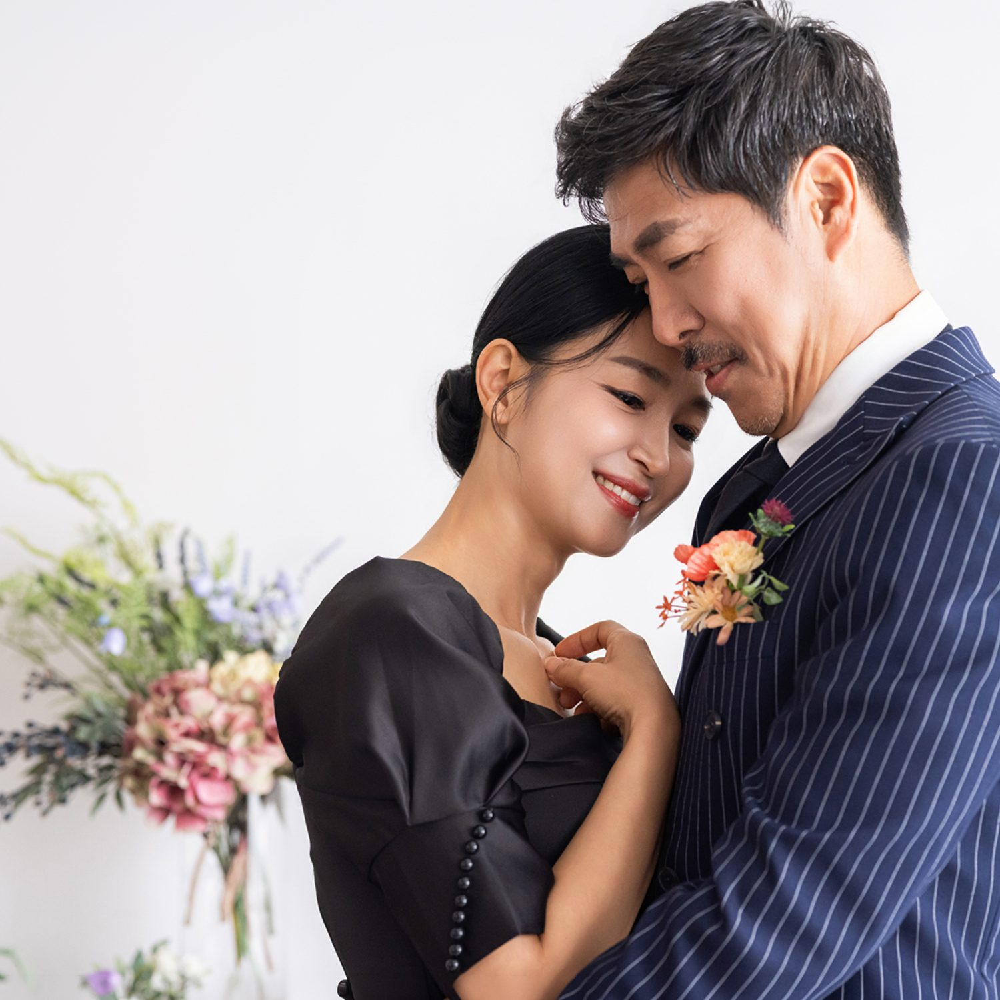
첫 자리는 두 사람입니다. 드레스와 수트를 입고 서로를 마주 봅니다. 결혼식 날에는 하지 못했던 사진입니다. 그날은 하객이 있었고 순서가 있었고 시간이 없었으니까요. 이 자리에서는 시간이 아주 느리게 갑니다.
리마인드웨딩은 어떤 옷으로 찍나요? 크게 세 가지입니다. 흰 드레스와 검정 턱시도, 한복 폐백 스타일, 그리고 캐주얼한 정장입니다. 한 날에 두 가지를 이어서 찍는 경우가 가장 많습니다. 드레스로 스튜디오를 찍고, 한복으로 마당을 찍는 순서입니다.
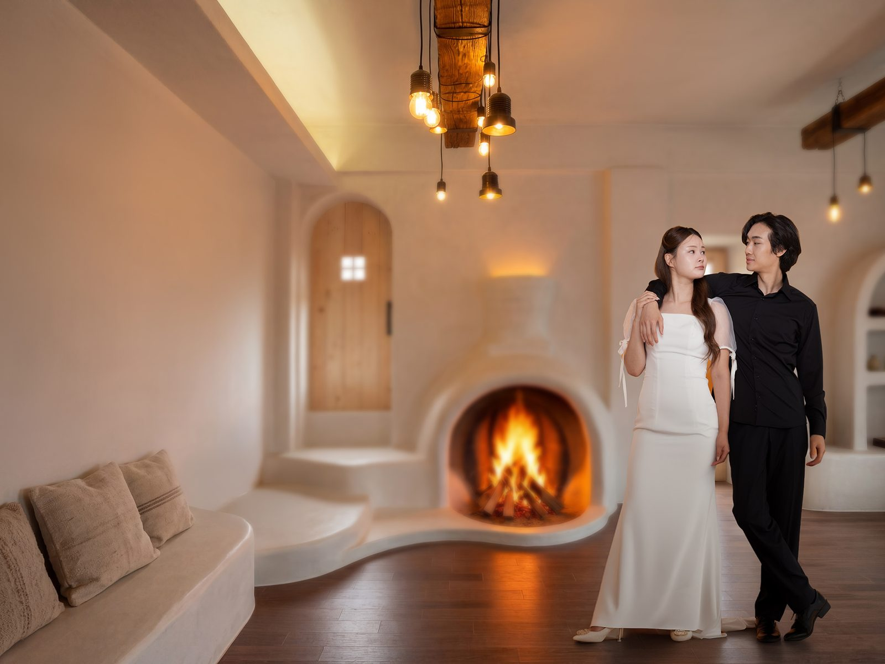
두 번째는 실내 자리입니다. 벽난로, 아치 창, 커다란 샹들리에. 리마인드웨딩은 배경을 여러 개 쓸 수 있다는 것이 장점입니다. 결혼식장에서는 한 자리에서만 찍었지만, 스튜디오에서는 방을 옮겨 가며 찍습니다.
창원과 의령 중 어디서 찍을지는 두 분의 편한 쪽으로 정하시면 됩니다. 창원 상남동 스튜디오는 실내 배경이 여러 개 있고, 의령은 마당과 돌담, 한옥 담장이 있습니다. 두 곳을 같은 날 오가기는 어려우니 하루에 한 곳을 정하시는 편이 좋습니다.
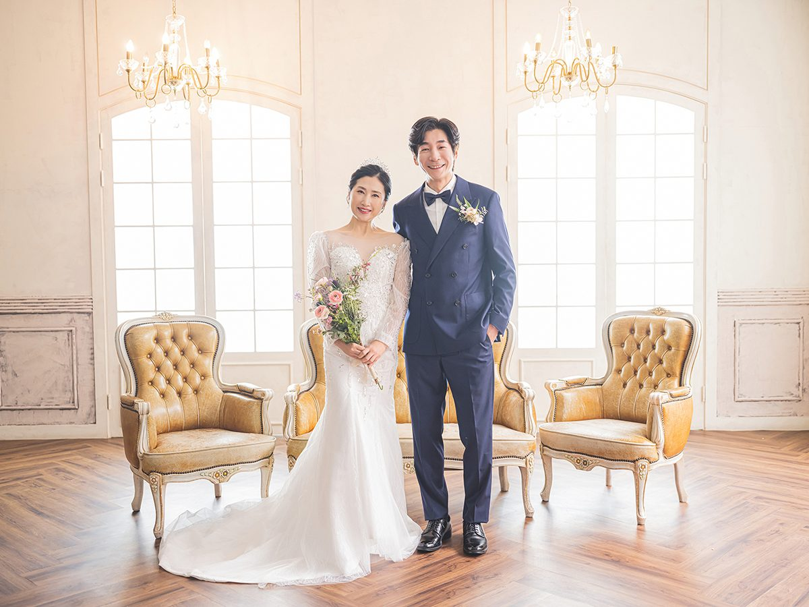
세 번째는 창가입니다. 이 자리는 오후 세 시 무렵이 가장 좋습니다. 빛이 비스듬히 들어와서 드레스의 레이스가 살아나고, 얼굴에는 부드러운 그늘이 집니다. 정오의 빛은 너무 세서 흰 드레스가 하얗게 날아갑니다.
한복으로 갈아입으면 분위기가 완전히 달라집니다. 흰 드레스에서 한복으로 바꾸면 같은 두 사람이 다른 시대의 부부처럼 보입니다. 한복은 앉는 자세에서 가장 아름답기 때문에, 이때는 방석과 의자를 준비해서 찍습니다.
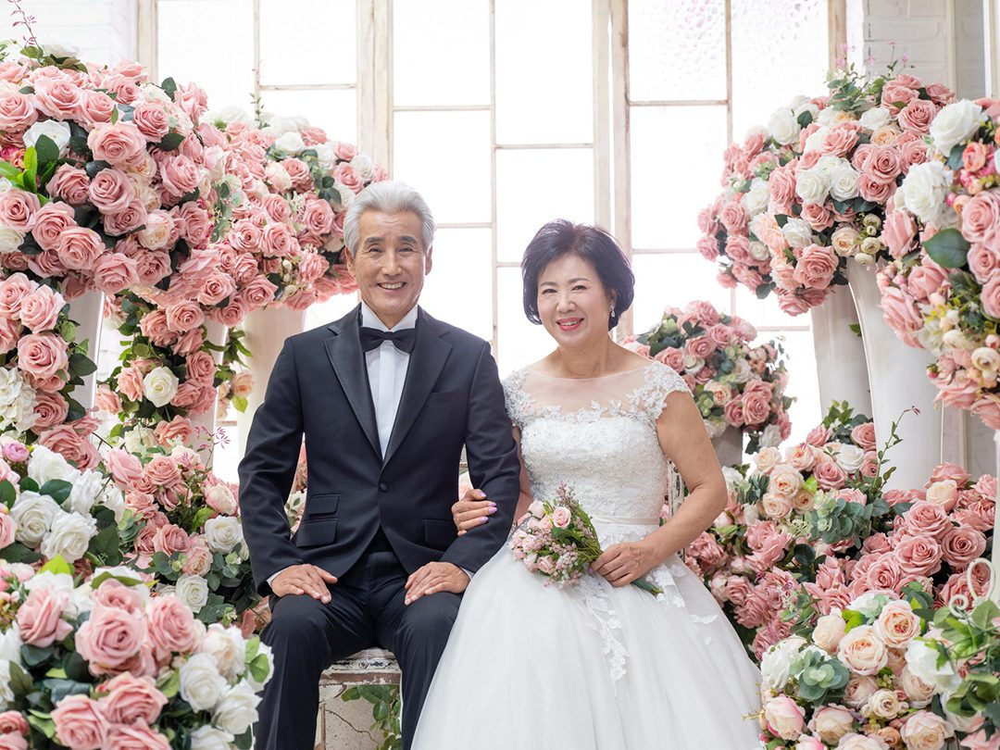
네 번째는 한옥 담장입니다. 기와지붕과 돌담, 그 앞에 한복을 입은 두 사람. 이 자리는 의령에서만 나오는 사진입니다. 비가 온 뒤에는 담장 색이 진해져서 사진이 더 좋아집니다.
부부만 오시는 경우가 많지만, 자녀가 함께 오시는 경우도 있습니다. 자녀가 성인이면 부모님 옆에 서서 한 장을 찍습니다. 이 컷은 리마인드웨딩의 마지막에 찍는 경우가 많고, 부모님보다 자녀가 더 좋아하십니다.
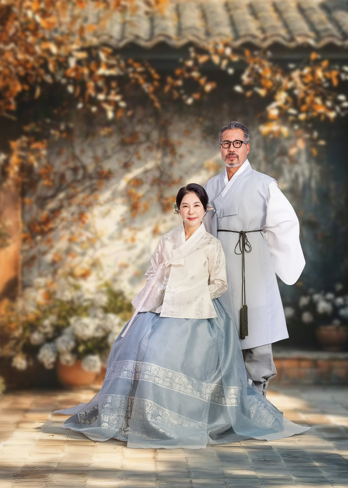
다섯 번째는 야외 부부 컷입니다. 마당에 서면 바람이 있습니다. 바람은 옷자락을 움직이고, 그 움직임이 사진에 남습니다. 실내에서는 절대 나오지 않는 장면입니다. 그래서 야외 컷은 한 장이 아니라 여러 장을 찍습니다.
드레스는 의상실에서 대여합니다. 리마인드웨딩은 신부 드레스의 사이즈 조절이 중요합니다. 결혼식 때와 체형이 다르기 때문입니다. 예약하실 때 키와 평소 사이즈를 알려 주시면 미리 조정해 둡니다.
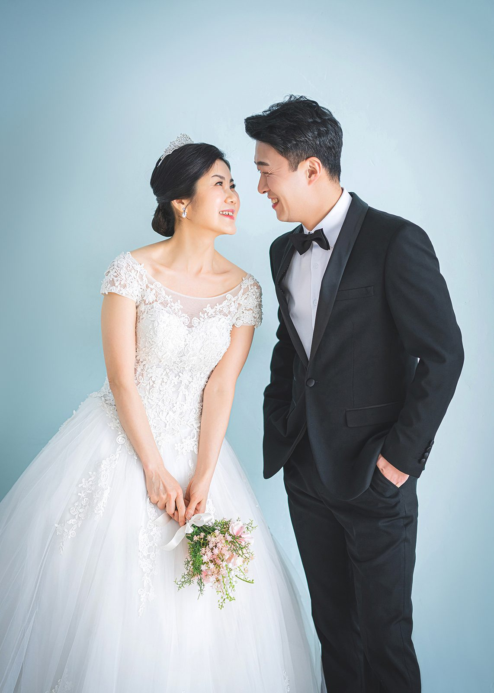
여섯 번째는 꽃 장식 자리입니다. 분홍과 흰 꽃으로 벽을 채운 자리입니다. 이 자리는 드레스 색과 꽃 색이 부딪히지 않게 하는 것이 중요합니다. 흰 드레스에는 분홍이 잘 맞고, 아이보리 드레스에는 연두나 살구가 잘 맞습니다.
리마인드웨딩을 하시는 분들이 가장 많이 하는 질문은 "너무 늦지 않았나"입니다. 저는 늦지 않았다고 말합니다. 지금의 얼굴로 찍는 사진이기 때문입니다. 결혼식 날의 얼굴과 지금의 얼굴은 다르고, 지금의 얼굴에는 그동안 함께 산 시간이 남아 있습니다.
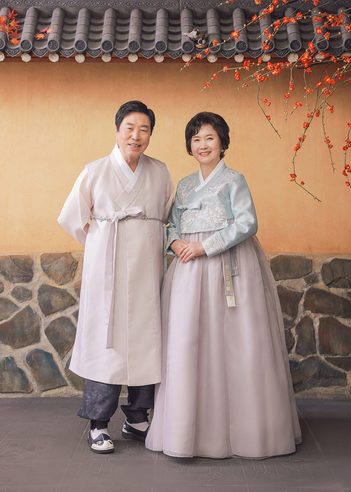
일곱 번째는 나란히 서는 자리입니다. 서로 보지 않고 같은 방향을 봅니다. 이 자리는 두 사람이 같은 곳을 바라보는 사진이라서, 오래 함께 산 부부에게 특히 잘 어울립니다.
준비물은 간단합니다. 남성은 흰 셔츠와 검정 양말, 여성은 드레스 안에 입을 속옷만 신경 쓰시면 됩니다. 구두는 스튜디오에 준비되어 있지만 발이 편한 개인 신발을 가져오셔도 됩니다. 촬영은 보통 두 시간에서 세 시간 사이입니다. [확인 필요]
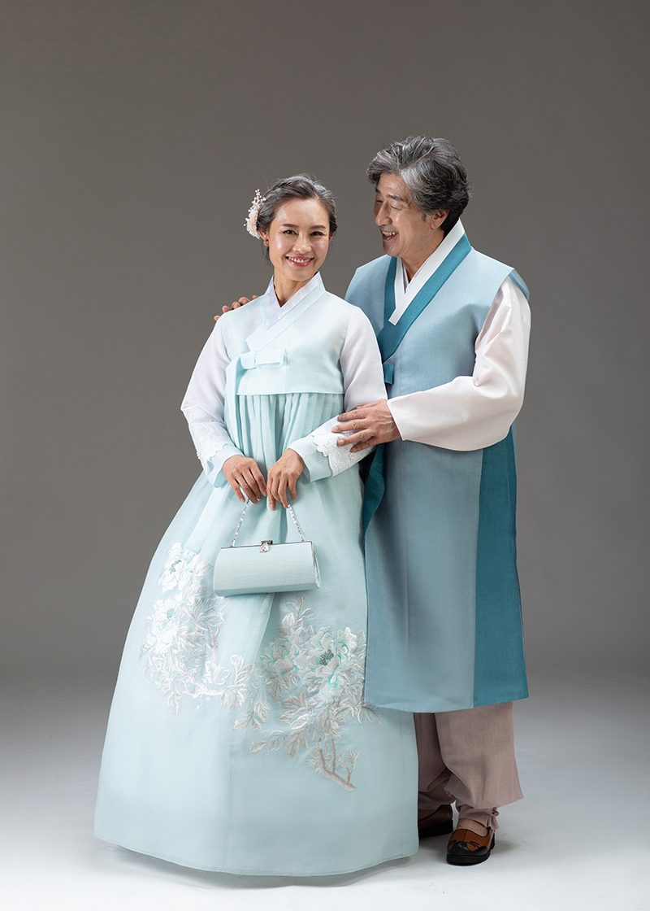
여덟 번째는 캐주얼 컷입니다. 드레스와 수트를 벗고 평소 옷으로 한 장. 이 컷은 두 사람이 가장 편한 얼굴이 나옵니다. 사진첩의 마지막 장에 이 사진을 넣으면, 하루가 자연스럽게 끝나는 느낌이 납니다.
액자도 함께 만들 수 있습니다. 리마인드웨딩 사진은 큰 액자로 만드시는 경우가 많습니다. 거실에 걸어 두시는 분도 있고, 침실에 두시는 분도 있습니다. 원목 액자는 시간이 지나도 색이 변하지 않아서 오래 두기에 좋습니다. [확인 필요]
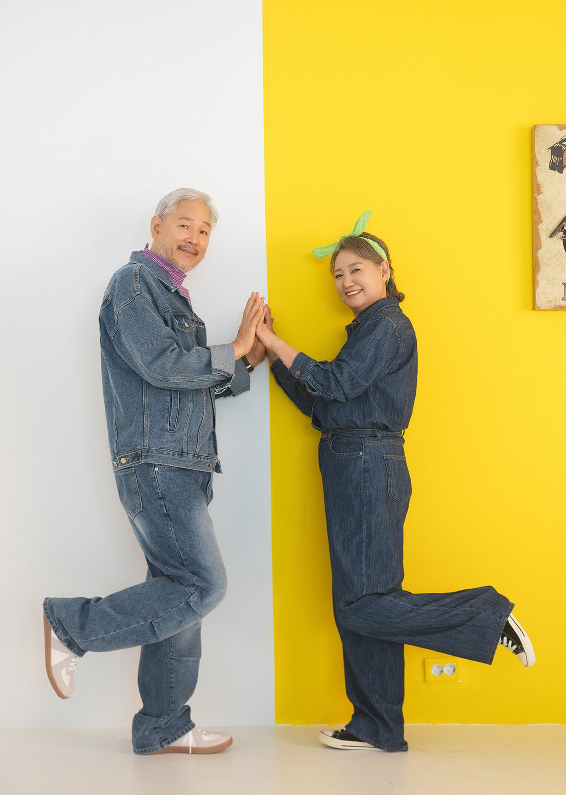
아홉 번째는 색 배경입니다. 민트, 노랑, 분홍. 같은 옷으로 세 배경을 찍으면 사진첩에 세 가지 장면이 생깁니다. 색 배경은 두 사람의 얼굴색을 살리는 쪽으로 고릅니다. 얼굴이 노란 기가 도는 분은 민트나 하늘색이, 붉은 기가 도는 분은 연두나 아이보리가 잘 맞습니다.
리마인드웨딩은 사진을 찍는 일이지만, 실제로는 그날의 이야기를 다시 꺼내는 일입니다. 촬영 중에 두 분이 결혼식 날 이야기를 하십니다. 누가 먼저 도착했는지, 누가 더 떨었는지. 저는 그 이야기를 들으면서 셔터를 누릅니다.
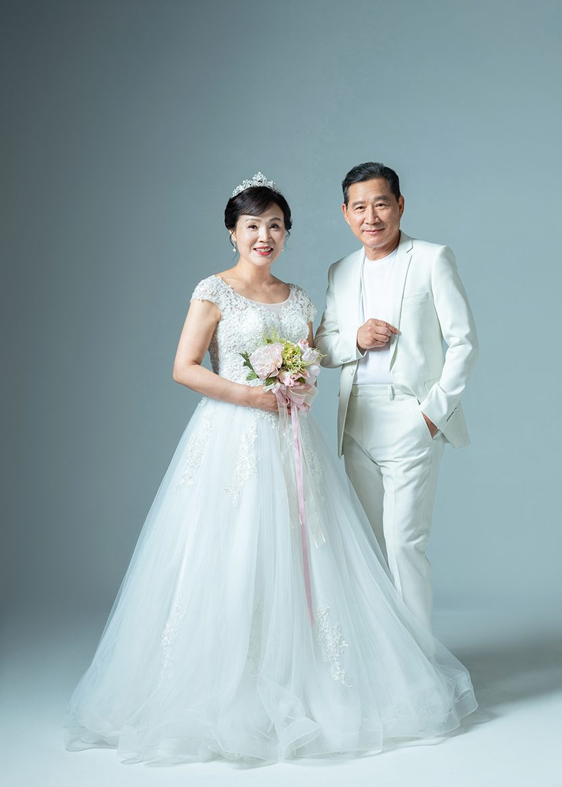
열 번째는 웃음 자리입니다. 이 자리는 마지막에 찍습니다. 두 사람이 지쳐 있을 때 오히려 웃음이 자연스럽게 나오기 때문입니다. 저는 이 자리에서 농담을 하나 준비해 갑니다. 그 농담이 매번 같은 것은 아닙니다.
촬영본은 보정 후에 전달합니다. 피부 보정과 색 보정을 하고, 액자를 만들 경우 인화까지 진행합니다. 전달 방식과 기간은 예약하실 때 안내드립니다. [확인 필요]
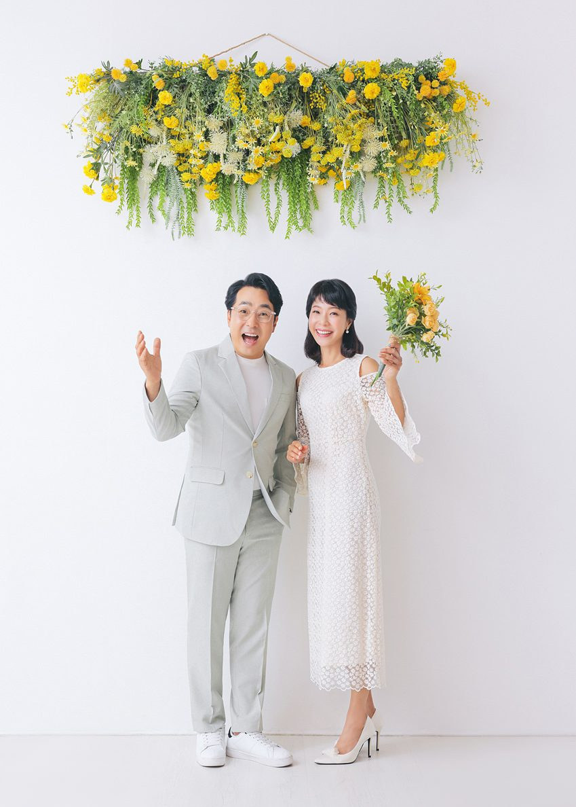
열한 번째는 파스텔 자리입니다. 연분홍 드레스와 흰 수트. 이 조합은 리마인드웨딩에서 가장 많이 선택하는 색입니다. 흰 드레스보다 편하게 입을 수 있고, 사진에서는 부드럽게 나옵니다.
마지막으로 한 가지만 말씀드리고 싶습니다. 리마인드웨딩은 젊음을 다시 찍는 촬영이 아닙니다. 지금의 두 사람을 찍는 촬영입니다. 그래서 저는 주름을 지우지 않습니다. 그 주름이 두 사람이 함께 산 시간이기 때문입니다.
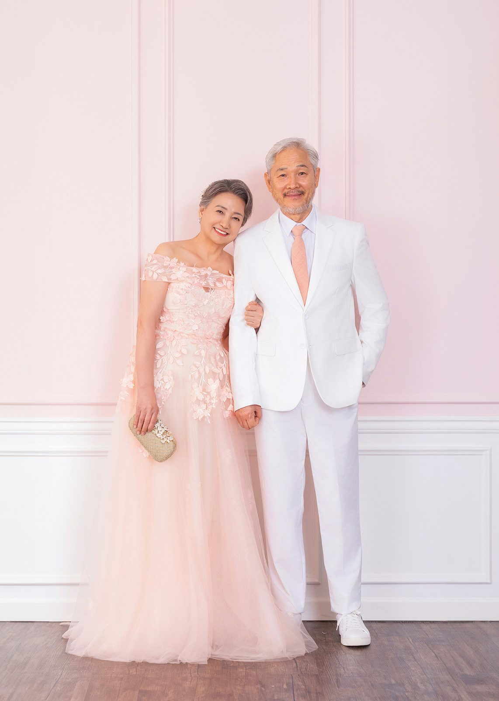
헤어와 메이크업은 촬영 전에 함께 정합니다. 드레스에 맞춰 올림 머리로 할지, 내린 머리로 할지. 한복으로 갈아입을 때는 머리를 다시 손봐야 해서, 두 가지 옷을 입으실 경우 그만큼 시간을 더 잡습니다.
의령으로 오시면 촬영 후에 근처에서 식사를 하실 수 있습니다. 촬영이 끝나면 두 분이 오랜만에 나들이를 하는 기분이 나신다고 말씀하시는 분이 많습니다. 사진 한 장을 위해 하루를 비워 두시는 것도 좋은 방법입니다.
이 글의 사진은 촬영 스타일을 보여 드리기 위한 예시 이미지입니다. 실제 고객의 사진이 아닙니다.
사랑이야기 스튜디오 창원점 / 주소: 경남 창원시 성산구 원이대로 652, 상남동 롯데빌딩 2층 / 전화: 창원점 055-287-8022, 의령점 055-574-3706 / 홈페이지: lovestorykim.com / 인스타그램: @lovestorychangwon / 운영: 김작가
자주 묻는 질문
Q. 결혼한 지 오래됐는데 괜찮을까요?
A. 괜찮습니다. 십 년, 이십 년, 그보다 오래된 부부도 오십니다. 오래 함께한 시간이 사진에 남는 것이 이 촬영의 목적입니다.
Q. 자녀와 함께 찍을 수 있나요?
A. 됩니다. 부부 컷을 먼저 찍고 자녀가 합류해서 가족 컷을 찍는 순서가 자연스럽습니다. 자녀가 어리면 마지막에 짧게 찍습니다.
Q. 드레스 사이즈가 맞을까요?
A. 대여 전에 사이즈를 조정합니다. 예약하실 때 키와 평소 사이즈를 알려 주시면 미리 맞춰 두고, 당일에도 한 번 더 조정합니다.

오시는 곳
사랑이야기창원점
- 주소 경남 창원시 성산구 원이대로 652, 상남동 롯데빌딩 2층
- 전화 055-287-8022
- 영업시간 오전 10:00 ~ 오후 7:00
- 예약 전화 상담 · 카카오톡 채널
- 주차 건물 지하 주차장
김작가사진이야기 의령
- 주소 경남 의령군 궁류면 청정로 1188
- 전화 055-574-3706
- 영업시간 오전 10:00 ~ 오후 7:00
- 예약 전화 상담 · 카카오톡 채널
- 주차 전용 주차장
이 글에 한마디
댓글창을 준비하고 있습니다. 그동안 궁금한 점은 카카오채널로 남겨 주시면 바로 답변드립니다.
카카오채널로 한마디 남기기